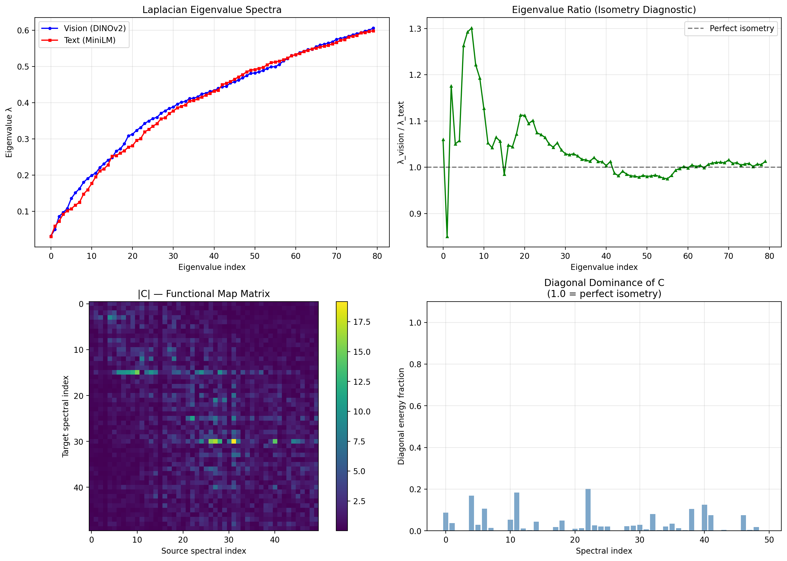
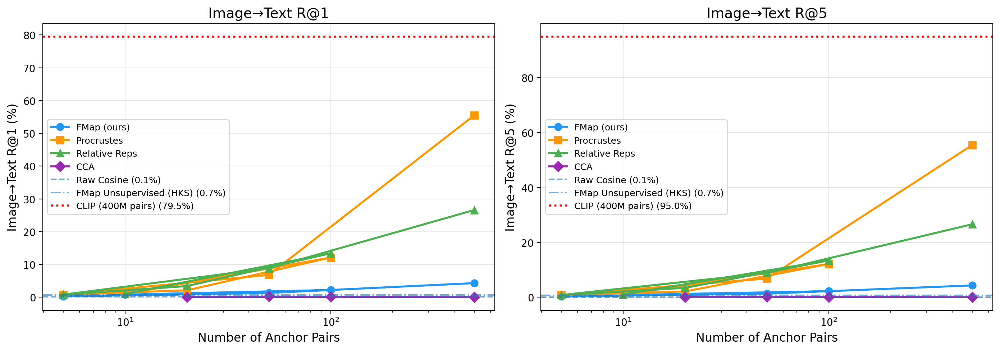
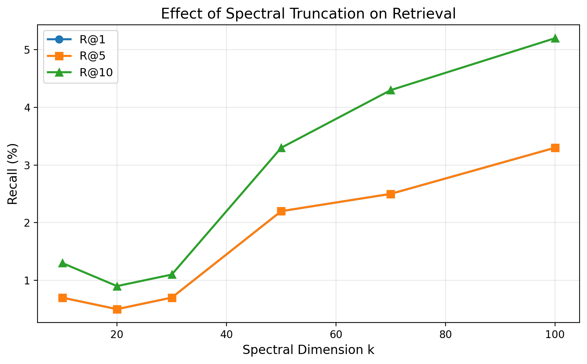

Abstract
We study cross-modal alignment between independently pretrained vision (DINOv2) and language (all-MiniLM-L6-v2) encoders using the functional map framework from computational geometry. While the framework reveals that independently trained models develop manifolds of comparable intrinsic complexity (normalized spectral distance 0.043), it also uncovers a "spectral complexity–orientation gap": the eigenvector bases are effectively unaligned. This gap defines a boundary condition for spectral alignment methods and motivates new diagnostic quantities for characterizing cross-modal representation compatibility.
The Functional Map Framework
Functional maps reformulate correspondence between two manifolds as a compact linear operator \(C \in \mathbb{R}^{k \times k}\) between their Laplace–Beltrami spectral bases. Given two manifolds \(\mathcal{M}_1, \mathcal{M}_2\), a pointwise map \(T: \mathcal{M}_1 \to \mathcal{M}_2\) induces a linear operator represented by \(C\) in the truncated spectral basis.
The functional map \(C\) is obtained by solving a regularized least-squares problem:
Spectral Analysis & Diagnostics

We propose three diagnostic quantities to characterize geometric compatibility:
- Normalized Spectral Distance (\(d_{spec}\)): Measures similarity in intrinsic complexity. Observed: 0.043 (Ideal: < 0.01).
- Diagonal Dominance (\(\bar{\rho}\)): Indicates shared spectral orientation. Observed: < 0.05 (Ideal: > 0.7).
- Orthogonality Error (\(\epsilon_{orth}\)): Measures how close the correspondence is to an isometry. Observed: 70.15 (Ideal: < 0.1).
Experimental Results

Retrieval Performance Comparison
| Method | Anchors | i2t R@1 | i2t R@5 | t2i R@1 | t2i R@5 |
|---|---|---|---|---|---|
| Raw Cosine | 0 | 0.1 | 0.1 | 0.1 | 0.5 |
| FMap Unsupervised (HKS) | 0 | 0.7 | 0.7 | 0.4 | 1.7 |
| FMap (ours) | 100 | 2.2 | 2.2 | 1.9 | 9.3 |
| Procrustes | 100 | 12.1 | 12.1 | 10.8 | 23.0 |
| Relative Reps | 100 | 13.4 | 13.4 | 12.1 | 27.5 |
| CLIP (ViT-B/32) | 400M | 79.5 | 95.0 | 58.8 | 83.4 |

Conclusion
Our findings reveal a Spectral Complexity–Orientation Gap: independently trained encoders converge in how much structure they capture (similar eigenvalues) but not in how they organize it (unaligned eigenvectors). This work provides a finer-grained measurement tool for the Platonic Representation Hypothesis, showing that while foundation models converge toward shared statistical representations, their internal coordinate systems remain decoupled.